전기공사기사 (2021-03-07 기출문제)
1과목: 전기응용 및 공사재료
1. 금속의 표면 담금질에 쓰이는 가열방식은?
- 유도가열
- 유전가열
- 저항가열
- 아크가열
(정답률: 73%)

2. 구리의 원자량은 63.54이고 원자가가 2일 때 전기화학당량은? (단, 구리 화학당량과 전기화학당량의 비는 약 96,494이다.)
- 0.3292 mg/C
- 0.03292 mg/C
- 0.3292 g/C
- 0.03292 g/C
(정답률: 61%)
3. SCR 사이리스터에 대한 설명으로 틀린 것은?
- 게이트 전류에 의하여 턴온 시킬 수 있다.
- 게이트 전류에 의하여 턴오프 시킬 수 없다.
- 오프 상태에서는 순방향전압과 역방향전압 중 역방향전압에 대해서만 차단 능력을 가진다.
- 턴오프 된 후 다시 게이트 전류에 의하여 턴온시킬 수 있는 상태로 회복할 때까지 일정한 시간이 필요하다.
(정답률: 69%)
4. 형광등의 광색이 주광색일 때 색온도(K)는 약 얼마인가?
- 3,000
- 4,500
- 5,000
- 6,500
(정답률: 58%)
5. 풍량 6,000m3/min, 전 풍압 120mmAq의 주 배기용 팬을 구동하는 전동기의 소요동력(kW)은? (단, 팬의 효율 η=60%, 여유계수 K=1.2이다.)
- 200
- 235
- 270
- 3⑤
(정답률: 68%)
6. 단상 반파정류회로에서 직류전압의 평균값 150V를 얻으려면 정류소자의 피크 역전압(PIV)은 약 몇 V인가? (단, 부하는 순저항 부하이고 정류소자의 전압강하(평균값)는 7V이다.)
- 247
- 349
- 493
- 698
(정답률: 50%)
7. 전기 철도의 전동기 속도제어방식 중 주파수와 전압을 가변시켜 제어하는 방식은?
- 저항 제어
- 초퍼 제어
- 위상 제어
- VVVF 제어
(정답률: 84%)
8. 3,400lm의 광속을 내는 전구를 반경 14cm, 투과율 80%인 구형 글로브 내에서 점등시켰을 때 글로브의 평균 휘도(sb)는 약 얼마인가?
- 0.35
- 35
- 350
- 3,500
(정답률: 39%)
9. 일반적인 농형 유도전동기의 기동법이 아닌 것은?
- Y - △ 기동
- 전전압 기동
- 2차 저항 기동
- 기동보상기에 의한 기동
(정답률: 84%)
10. 물 7L를 14℃에서 100℃까지 1시간 동안 가열하고자 할 때, 전열기 용량(kW)은? (단, 전열기의 효율은 70%이다.)
- 0.5
- 1
- 1.5
- 2
(정답률: 73%)
11. 알칼리 축전지에서 소결식에 해당하는 초급방전형은?
- AM형
- AMH형
- AL형
- AH-S형
(정답률: 77%)
12. 장력이 걸리지 않는 개소의 알루미늄선 상호간 또는 알루미늄선과 동선의 압축접속에 사용하는 분기 슬리브는?
- 알루미늄 전선용 압축 슬리브
- 알루미늄 전선용 보수 슬리브
- 알루미늄 전선용 분기 슬리브
- 분기 접속용 동 슬리브
(정답률: 61%)
13. 철주의 주주재로 사용하는 강관의 두께는 몇 mm 이상이어야 하는가?
- 1.6
- 2.0
- 2.4
- 2.8
(정답률: 54%)
14. 다음 중 지선에 근가를 시공할 때 사용되는 콘크리트 근가의 규격(길이)(m)은? (단, 원형지선근가는 제외한다.)(문제 오류로 가답안 발표시 2번으로 발표되었으나, 확정답안 발표시 2, 4정답처리 되었습니다. 여기서는 가답안인 2번을 누르면 정답 처리 됩니다.)
- 0.5
- 0.7
- 0.9
- 1.0
(정답률: 72%)
15. 가공전선로에 사용하는 애자가 구비해야 할 조건이 아닌 것은?
- 이상전압에 견디고, 내부이상전압에 대해 충분한 절연강도를 가질 것
- 전선의 장력, 풍압, 빙설 등의 외력에 의한 하중에 견딜 수 있는 기계적 강도를 가질 것
- 비, 눈, 안개 등에 대하여 충분한 전기적 표면저항이 있어 누설전류가 흐르지 못하게 할 것
- 온도나 습도의 변화에 대해 전기적 및 기계적 특성의 변화가 클 것
(정답률: 84%)
16. 접지도체에 피뢰시스템이 접속되는 경우 접지도체의 최소 단면적(mm2)은? (단, 접지도체는 구리로 되어 있다.)
- 16
- 20
- 24
- 28
(정답률: 72%)
17. 셀룰러덕트의 최대 폭이 200mm를 초과할 때 셀룰러덕트의 판 두께는 몇 mm 이상이어야 하는가?
- 1.2
- 1.4
- 1.6
- 1.8
(정답률: 47%)
18. 고압으로 수전하는 변전소에서 접지 보호용으로 사용되는 계전기의 영상전류를 공급하는 계전기는?
- CT
- PT
- ZCT
- GPT
(정답률: 87%)
19. 상향 광속과 하향 광속이 거의 동일하므로 하향 광속으로 직접 작업면에 직사시키고 상향 광속의 반사광으로 작업면의 조도를 증가시키는 조명기구는?
- 간접 조명기구
- 직접 조명기구
- 반직접 조명기구
- 전반확산 조명기구
(정답률: 74%)
20. KS C 8000에서 감전 보호와 관련하여 조명기구의 종류(등급)을 나누고 있다. 각 등급에 따른 기구의 설명이 틀린 것은?
- 등급 0 기구: 기초절연으로 일부분을 보호한 기구로서 접지단자를 가지고 있는 기구
- 등급Ⅰ기구: 기초절연만으로 전체를 보호한 기구로서 보호 접지단자를 가지고 있는 기구
- 등급Ⅱ 기구: 2중 절연을 한 기구
- 등급Ⅲ 기구: 정격전압이 교류 30V 이하인 전압의 전원에 접속하여 사용하는 기구
(정답률: 50%)
2과목: 전력공학
21. 다음과 같은 유황곡선을 가진 수력지점에서 최대사용 수량 0C로 1년간 계속 발전하는데 필요한 저수지의 용량은?
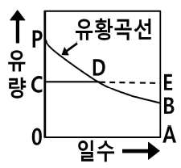
- 면적 0CPBA
- 면적 0CDBA
- 면적 DEB
- 면적 PCD
(정답률: 38%)
22. 통신선과 평행인 주파수 60Hz의 3상 1회선 송전선이 있다. 1선 지락때문에 영상전류가 100A 흐르고 있다면 통신선에 유도되는 전자유도전압(V)은? (단, 영상전류는 전 전선에 걸쳐서 같으며, 송전선과 통신선과의 상호 인덕턴스는 0.06mH/km, 그 평행길이는 40km이다.)
- 156.6
- 162.8
- 230.2
- 271.4
(정답률: 29%)
23. 고장전류의 크기가 커질수록 동작시간이 짧게 되는 특성을 가진 계전기는?
- 순한시 계전기
- 정한시 계전기
- 반한시 계전기
- 반한시 정한시 계전기
(정답률: 42%)
24. 3상 3선식 송전선에서 한 선의 저항이 10Ω, 리액턴스가 20Ω이며, 수전단의 선간전압이 60kV, 부하역률이 0.8인 경우에 전압강하율이 10%라 하면 이 송전선로는 약 몇 kW까지 수전할 수 있는가?
- 10,000
- 12,000
- 14,400
- 18,000
(정답률: 31%)
25. 기준 선간전압 23kV, 기준 3상 용량 5,000kVA, 1선의 유도 리액턴스가 15Ω일 때 % 리액턴스는?
- 28.36%
- 14.18%
- 7.09%
- 3.55%
(정답률: 38%)
26. 전력원선도의 가로축과 세로축을 나타내는 것은?
- 전압과 전류
- 전압과 전력
- 전류와 전력
- 유효전력과 무효전력
(정답률: 39%)
27. 화력발전소에서 증기 및 급수가 흐르는 순서는?
- 절탄기 → 보일러 → 과열기 → 터빈 → 복수기
- 보일러 → 절탄기 → 과열기 → 터빈 → 복수기
- 보일러 → 과열기 → 절탄기 → 터빈 → 복수기
- 절탄기 → 과열기 → 보일러 → 터빈 → 복수기
(정답률: 32%)
28. 연료의 발열량이 430kcal/kg일 때 화력발전소의 열효율(%)은? (단, 발전기의 출력은 PG[kW], 시간당연료의 소비량은 B[kg/h]이다.)
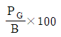
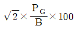
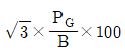
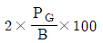
(정답률: 31%)
29. 송전선로에서 1선 지락시에 건전상의 전압상승이 가장 적은 접지방식은?
- 비접지방식
- 직접접지방식
- 저항접지방식
- 소호리액터접지방식
(정답률: 30%)
30. 접지봉으로 탑각의 접지저항 값을 희망하는 접지저항 값까지 줄일 수 없을 때 사용하는 것은?
- 가공지선
- 매설지선
- 크로스본드선
- 차폐선
(정답률: 40%)
31. 전력 퓨즈(Power Fuse)는 고압, 특고압기기의 주로 어떤 전류의 차단을 목적으로 설치하는가?
- 충전전류
- 부하전류
- 단락전류
- 영상전류
(정답률: 41%)
32. 정전용량이 C1이고, V1의 전압에서 Qr의 무효전력을 발생하는 콘덴서가 있다. 정전용량을 변화시켜 2배로 승압된 전압(2V1)에서도 동일한 무효전력 Qr을 발생시키고자 할 때, 필요한 콘덴서의 정전용량(C2)은?
- C2=4C1
- C2=2C1
- C2=(1/2)C1
- C2=(1/4)C1
(정답률: 24%)
33. 송전선로에서의 고장 또는 발전기 탈락과 같은 큰 외란에 대하여 계통에 연결된 각 동기기가 동기를 유지하면서 계속 안정적으로 운전할 수 있는지를 판별하는 안정도는?
- 동태안정도(dynamic stability)
- 정태안정도(steady-state stability)
- 전압안정도(voltage stability)
- 과도안정도(transient stability)
(정답률: 33%)
34. 송전선로의 고장전류계산에 영상 임피던스가 필요한 경우는?
- 1선 지락
- 3상 단락
- 3선 단선
- 선간 단락
(정답률: 41%)
35. 배전선로의 주상변압기에서 고압측-저압측에 주로 사용되는 보호장치의 조합으로 적합한 것은?
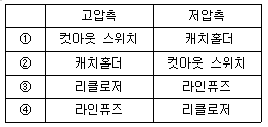
- ①
- ②
- ③
- ④
(정답률: 35%)
36. 용량 20kVA인 단상 주상 변압기에 걸리는 하루 동안의 부하가 처음 14시간 동안은 20kW, 다음 10시간 동안은 10kW일 때, 이 변압기에 의한 하루 동안의 손실량(Wh)은? (단, 부하의 역률은 1로 가정하며, 변압기의 전 부하동손은 300W, 철손은 100W이다.)
- 6,850
- 7,200
- 7,350
- 7,800
(정답률: 25%)
37. 케이블 단선사고에 의한 고장점까지의 거리를 정전용량측정법으로 구하는 경우, 건전상의 정전용량이 C, 고장점까지의 정전용량이 Cx, 케이블의 길이가 ℓ일 때 고장점까지의 거리를 나타내는 식으로 옳은 것은?
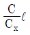
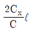
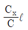
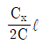
(정답률: 27%)
38. 수용가의 수용률을 나타낸 식은?
- (합성최대수용전력[kW]/평균전력[kW])×100%
- (평균전력[kW]/합성최대수용전력[kW])×100%
- (부하설비합계[kW]/최대수용전력[kW])×100%
- (최대수용전력[kW]/부하설비합계[kW])×100%
(정답률: 35%)
39. % 임피던스에 대한 설명으로 틀린 것은?
- 단위를 갖지 않는다.
- 절대량이 아닌 기준량에 대한 비를 나타낸 것이다.
- 기기 용량의 크기와 관계없이 일정한 범위의 값을 가진다.
- 변압기나 동기기의 내부 임피던스에만 사용할 수 있다.
(정답률: 35%)
40. 역률 0.8, 출력 320kW인 부하에 전력을 공급하는 변전소에 역률 개선을 위해 전력용 콘덴서 140kVA를 설치했을 때 합성역률은?
- 0.93
- 0.95
- 0.97
- 0.99
(정답률: 30%)
3과목: 전기기기
41. 전류계를 교체하기 위해 우선 변류기 2차측을 단락시켜야 하는 이유는?
- 측정오차 방지
- 2차측 절연 보호
- 2차측 과전류 보호
- 1차측 과전류 방지
(정답률: 32%)
42. BJT에 대한 설명으로 틀린 것은?
- Bipolar Junction Thyristor의 약자이다.
- 베이스 전류로 컬렉터 전류를 제어하는 전류제어 스위치이다.
- MOSFET, IGBT 등의 전압제어스위치보다 훨씬 큰 구동전력이 필요하다.
- 회로기호 B, E, C는 각각 베이스(Base), 에미터(Emitter), 컬렉터(Collector)이다.
(정답률: 34%)
43. 단상 변압기 2대를 병렬운전할 경우 각 변압기의 부하전류를 Ia, Ib, 1차측으로 환산한 임피던스를 Za, Zb, 백분율 임피던스 강하를 za, zb, 정격용량을 Pan, Pbn이라 한다. 이때 부하 분담에 대한 관계로 옳은 것은?
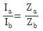
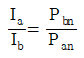
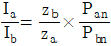
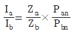
(정답률: 35%)
44. 사이클로 컨버터(Cyclo Converter)에 대한 설명으로 옳지 않은 것은?
- DC - DC buck 컨버터와 동일한 구조이다.
- 출력주파수가 낮은 영역에서 많은 장점이 있다.
- 시멘트공장의 분쇄기 등과 같이 대용량 저속 교류전동기 구동에 주로 사용된다.
- 교류를 교류로 직접변환하면서 전압과 주파수를 동시에 가변하는 전력변환기이다.
(정답률: 29%)
45. 극수 4이며 전기자 권선은 파권, 전기자 도체수가 250인 직류발전기가 있다. 이 발전기가 1,200rpm으로 회전할 때 600V의 기전력을 유기하려면 1극당 자속은 몇 Wb인가?
- 0.04
- 0.⑤
- 0.06
- 0.07
(정답률: 35%)
46. 직류발전기의 전기자 반작용에 대한 설명으로 틀린 것은?
- 전기자 반작용으로 인하여 전기적 중성축을 이동시킨다.
- 정류자 편간 전압이 불균일하게 되어 섬락의 원인이 된다.
- 전기자 반작용이 생기면 주자속이 왜곡되고 증가하게 된다.
- 전기자 반작용이란, 전기자 전류에 의하여 생긴 자속이 계자에 의해 발생되는 주자속에 영향을 주는 현상을 말한다.
(정답률: 32%)
47. 기전력(1상)이 Eo이고, 동기임피던스(1상)가 Zs인 2대의 3상 동기발전기를 무부하로 병렬운전시킬 때 각 발전기의 기전력 사이에 δs의 위상차가 있으면 한 쪽 발전기에서 다른 쪽 발전기로 공급되는 1상당의 전력(W)은?
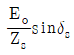
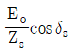
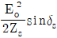
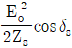
(정답률: 31%)
48. 60Hz, 6극의 3상 권선형 유도전동기가 있다. 이 전동기의 정격 부하시 회전수가 1,140rpm일 때, 이 전동기를 같은 공급전압에서 전부하 토크로 기동하기 위한 외부저항은 몇 Ω인가? (단, 회전자 권선은 Y결선이며, 슬립링간의 저항은 0.1Ω이다.)
- 0.5
- 0.85
- 0.95
- 1
(정답률: 25%)
49. 발전기 회전자에 유도자를 주로 사용하는 발전기는?
- 수차발전기
- 엔진발전기
- 터빈발전기
- 고주파발전기
(정답률: 30%)
50. 3상 권선형 유도전동기 기동 시 2차측에 외부 가변저항을 넣는 이유는?
- 회전수 감소
- 기동전류 증가
- 기동토크 감소
- 기동전류 감소와 기동토크 증가
(정답률: 35%)
51. 1차 전압은 3,300V이고 1차측 무부하 전류는 0.15A, 철손은 330W인 단상 변압기의 자화전류는 약 몇 A인가?
- 0.112
- 0.145
- 0.181
- 0.231
(정답률: 23%)
52. 유도전동기의 안정운전의 조건은? (단, Tm: 전동기 토크, TL: 부하 토크, n: 회전수)
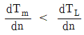
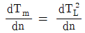
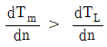
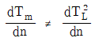
(정답률: 34%)
53. 전압이 일정한 모선에 접속되어 역률 1로 운전하고 있는 동기전동기를 동기조상기로 사용하는 경우 여자전류를 증가시키면 이 전동기는 어떻게 되는가?
- 역률은 앞서고, 전기자 전류는 증가한다.
- 역률은 앞서고, 전기자 전류는 감소한다.
- 역률은 뒤지고, 전기자 전류는 증가한다.
- 역률은 뒤지고, 전기자 전류는 감소한다.
(정답률: 29%)
54. 직류기에서 계자자속을 만들기 위하여 전자석의 권선에 전류를 흘리는 것을 무엇이라 하는가?
- 보극
- 여자
- 보상권선
- 자화작용
(정답률: 31%)
55. 동기리액턴스 Xs=10Ω, 전기자 권선저항 ra=0.1Ω, 3상 중 1상의 유도기전력 E=6400V, 단자전압 V=4000V, 부하각δ=30°이다. 비철극기인 3상 동기발전기의 출력은 약 몇 kW인가?
- 1,280
- 3,840
- 5,560
- 6,650
(정답률: 26%)
56. 히스테리시스 전동기에 대한 설명으로 틀린 것은?
- 유도전동기와 거의 같은 고정자이다.
- 회전자 극은 고정자 극에 비하여 항상 각도 δh만큼 앞선다.
- 회전자가 부드러운 외면을 가지므로 소음이 적으며, 순조롭게 회전시킬 수 있다.
- 구속 시부터 동기속도만을 제외한 모든 속도 범위에서 일정한 히스테리시스 토크를 발생한다.
(정답률: 23%)
57. 단자전압 220V, 부하전류 50A인 분권발전기의 유도기전력은 몇 V인가? (단, 여기서 전기자 저항은 0.2Ω이며, 계자전류 및 전기자 반작용은 무시한다.)
- 200
- 210
- 220
- 230
(정답률: 32%)
58. 단상 유도전압조정기에 단락권선의 역할은?
- 철손 경감
- 절연 보호
- 전압강하 경감
- 전압조정 용이
(정답률: 20%)
59. 3상 유도전동기에서 회전자가 슬립 s로 회전하고 있을 때 2차 유기전압 E2s 및 2차 주파수 f2s와 s와의 관계로 옳은 것은? (단, E2는 회전자가 정지하고 있을 때 2차 유기기전력이며 f1은 1차 주파수이다.)
- E2s=sE2, f2s=sf1
- E2s=sE2, f2s=f1/s
- E2s=E2/s, f2s=f1/s
- E2s=(1-s)E2, f2s=(1-s)f1
(정답률: 34%)
60. 3,300/200V의 단상 변압기 3대를 △ - Y 결선하고 2차측 선간에 15kW의 단상 전열기를 접속하여 사용하고 있다. 결선을 △ - △ 로 변경하는 경우 이 전열기의 소비전력은 몇 kW로 되는가?
- 5
- 12
- 15
- 21
(정답률: 28%)
4과목: 회로이론 및 제어공학
61. 블록선도와 같은 단위 피드백 제어시스템의 상태방정식은? (단, 상태변수는
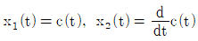
로 한다.)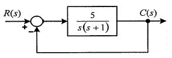
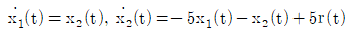
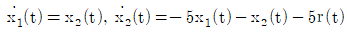
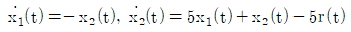
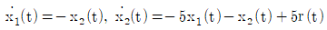
(정답률: 20%)
62. 적분시간 3sec, 비례 감도가 3인 비례적분동작을 하는 제어요소가 있다. 이 제어요소에 동작신호 x(t)=2t를 주었을 때 조작량은 얼마인가? (단, 초기 조작량 y(t)는 0으로 한다.)
- t2+2t
- t2+4t
- t2+6t
- t2+8t
(정답률: 34%)
63. 블록선도의 제어시스템은 단위 램프 입력에 대한 정상상태오차(정상편차)가 0.01이다. 이 제어시스템의 제어요소인 GC1(s)의 k는?
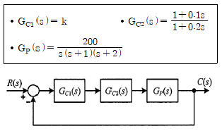
- 0.1
- 1
- 10
- 100
(정답률: 26%)
64. 개루프 전달함수 G(s)H(s)로부터 근궤적을 작성할 때 실수축에서의 점근선의 교차점은?
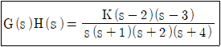
- 2
- 5
- -4
- -6
(정답률: 36%)
65. 2차 제어시스템의 감쇠율(damping ratio, ζ)이 ζ ＜ 0인 경우제어시스템의 과도응답 특성은?
- 발산
- 무제동
- 임계제동
- 과제동
(정답률: 29%)
66. 특성방정식이 2s4+10s3+11s2+5s+K=0 으로 주어진 제어시스템이 안정하기 위한 조건은?
- 0＜ K ＜ 2
- 0 ＜ K ＜ 5
- 0 ＜ K ＜ 6
- 0 ＜ K ＜ 10
(정답률: 36%)
67. 블록선도의 전달함수  는?
는?
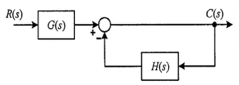
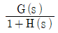
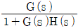
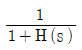
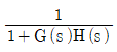
(정답률: 38%)
68. 신호흐름선도에서 전달함수
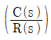
는?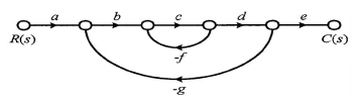
- abcde/(1-cg-bcdg)
- abcde/(1-cf+bcdg)
- abcde/(1+cf-bcdg)
- abcde/(1+cf+bcdg)
(정답률: 36%)
69. e(t)의 z변환을 E(z)라고 했을 때 e(t)의 최종값 e(∞)은?
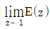
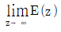
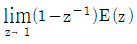
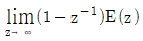
(정답률: 26%)
70.
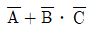
와 등가인 논리식은?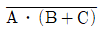
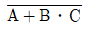
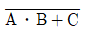
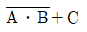
(정답률: 30%)
71.
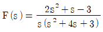
의 라플라스 역변환은?- 1-e-t+2e-3t
- 1-e-t-2e-3t
- -1-e-t-2e-3t
- -1+e-t+2e-3t
(정답률: 24%)
72. 전압 및 전류가 다음과 같을 때 유효전력(W) 및 역률(%)은 각각 약 얼마인가?
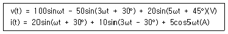
- 825W, 48.6%
- 776.4W, 59.7%
- 1,120W, 77.4%
- 1,850W, 89.6%
(정답률: 28%)
73. 회로에서 t=0초일 때 닫혀있는 스위치 S를 열었다. 이때 dv(0+)/dt의 값은? (단, C의 초기 전압은 0V이다.)
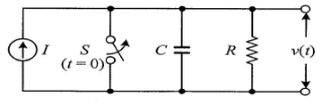
- 1/RI
- C/I
- RI
- I/C
(정답률: 25%)
74. △ 결선된 대칭 3상 부하가 0.5Ω인 저항만의 선로를 통해 평형 3상 전압원에 연결되어 있다. 이 부하의 소비전력이 1,800W이고 역률이 0.8(지상)일 때, 선로에서 발생하는 손실이 50W이면 부하의 단자전압(V)의 크기는?
- 627
- 525
- 326
- 225
(정답률: 26%)
75. 그림과 같이 △ 회로를 Y 회로로 등가 변환하였을 떄 임피던스 Za(Ω)은?
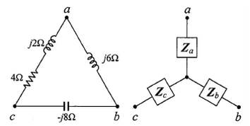
- 12
- -3+j6
- 4-j8
- 6+j8
(정답률: 30%)
76. 그림과 같은 H형의 4단자 회로망에서 4단자 정수(전송 파라미터) A는? (단, V1은 입력전압이고, V2는 출력전압이고, A는 출력 개방시 회로망의 전압이득 이다.)
- (Z1+Z2+Z3)/Z3
- (Z1+Z3+Z4)/Z3
- (Z2+Z3+Z5)/Z3
- (Z3+Z4+Z5)/Z3
(정답률: 31%)
77. 특성 임피던스가 400Ω인 회로 말단에 1,200Ω의 부하가 연결되어 있다. 전원측에 20kV의 전압을 인가할 때 반사파의 크기(kV)는? (단, 선로에서의 전압 감쇠는 없는 것으로 간주한다.)
- 3.3
- 5
- 10
- 33
(정답률: 25%)
78. 회로에서 전압 Vab(V)는?
- 2
- 3
- 6
- 9
(정답률: 29%)
79. △ 결선된 평형 3상 부하로 흐르는 선전류가 Ia, Ib, Ic일 때 이 부하로 흐르는 영상분 전류 I0(A)는?
- 3Ia
- Ia
- 0
(정답률: 28%)
80. 저항 R=15Ω과 인덕턴스 L=3mH를 병렬로 접속한 회로의 서셉턴스의 크기는 약 몇 ℧인가? (단, ω=2π×105)
- 3.2×10-2
- 8.6×10-3
- 5.3×10-4
- 4.9×10-5
(정답률: 25%)
5과목: 전기설비기술기준 및 판단기준
81. 전기철도차량에 전력을 공급하는 전차선의 가선방식에 포함되지 않는 것은?
- 가공방식
- 강체방식
- 제3레일방식
- 지중조가선방식
(정답률: 24%)
82. 수소냉각식 발전기 및 이에 부속하는 수소냉각장치에 대한 시설기준으로 틀린 것은?
- 발전기 내부의 수소의 온도를 계측하는 장치를 시설 할 것
- 발전기 내부의 수소의 순도가 70% 이하로 저하한 경우에 경보를 하는 장치를 시설할 것
- 발전기는 기밀구조의 것이고 또한 수소가 대기압에서 폭발하는 경우에 생기는 압력에 견디는 강도를 가지는 것일 것
- 발전기 내부의 수소의 압력을 계측하는 장치 및 그 압력이 현저히 변동한 경우에 이를 경보하는 장치를 시설할 것
(정답률: 40%)
83. 저압전로의 보호도체 및 중성선의 접속 방식에 따른 접지계통의 분류가 아닌 것은?
- IT 계통
- TN 계통
- TT 계통
- TC 계통
(정답률: 25%)
84. 교통신호등 회로의 사용전압이 몇 V를 넘는 경우는 전로에 지락이 생겼을 경우 자동적으로 전로를 차단하는 누전차단기를 시설하는가?
- 60
- 150
- 300
- 450
(정답률: 21%)
85. 터널 안의 전선로의 저압전선이 그 터널 안의 다른 저압전선(관등회로의 배선은 제외한다)·약전류전선 등 또는 수관·가스관이나 이와 유사한 것과 접근하거나 교차하는 경우, 저압전선을 애자공사에 의하여 시설하는 때에는 이격거리가 몇 cm 이상이어야 하는가? (단, 전선이 나전선이 아닌 경우이다.)
- 10
- 15
- 20
- 25
(정답률: 13%)
86. 저압 절연전선으로 「전기용품 및 생활용품 안전관리법」의 적용을 받는 것 이외에 KS에 적합한 것으로서 사용할 수 없는 것은?
- 450/750V 고무절연전선
- 450/750V 비닐절연전선
- 450/750V 알루미늄절연전선
- 450/750V 저독성 난연 폴리올레핀절연전선
(정답률: 25%)
87. 사용전압이 154kV인 모선에 접속되는 전력용 커패시터에 울타리를 시설하는 경우 울타리의 높이와 울타리로부터 충전부분까지 거리의 합계는 몇 m 이상이어야 하는가?
- 2
- 3
- 5
- 6
(정답률: 27%)
88. 태양광설비에 시설하여야 하는 계측기의 계측대상에 해당하는 것은?
- 전압과 전류
- 전력과 역률
- 전류와 역률
- 역률과 주파수
(정답률: 33%)
89. 전선의 단면적이 38mm2인 경동연선을 사용하고 지지물로는 B종 철주 또는 B종 철근콘크리트주를 사용하는 특고압 가공전선로를 제3종 특고압 보안 공사에 의하여 시설하는 경우 경간은 몇 m 이하이어야 하는가?
- 100
- 150
- 200
- 250
(정답률: 21%)
90. 저압전로에서 정전이 어려운 경우 등 절연저항측정이 곤란한 경우 저항성분의 누설전류가 몇 mA 이하이면 그 전로의 절연성능은 적합한 것으로 보는가?
- 1
- 2
- 3
- 4
(정답률: 25%)
91. 금속제 가요전선관 공사에 의한 저압 옥내배선의 시설기준으로 틀린 것은?
- 가요전선관 안에는 전선에 접속점이 없도록 한다.
- 옥외용 비닐절연전선을 제외한 절연전선을 사용한다.
- 점검할 수 없는 은폐된 장소에는 1종 가요전선관을 사용할 수 있다.
- 2종 금속제 가요전선관을 사용하는 경우에 습기 많은 장소에 시설하는 때에는 비닐 피복 2종 가요전선관으로 한다.
(정답률: 29%)
92. "리플프리(Ripple-free)직류"란 교류를 직류로 변환할 때 리플성분의 실효값이 몇 % 이하로 포함된 직류를 말하는가?
- 3
- 5
- 10
- 15
(정답률: 27%)
93. 사용전압이 22.9kV인 가공전선로를 시가지에 시설하는 경우 전선의 지표상 높이는 몇 m 이상인가? (단, 전선은 특고압 절연전선을 사용한다.)
- 6
- 7
- 8
- 10
(정답률: 28%)
94. 가공전선로의 지지물에 시설하는 지선으로 연선을 사용할 경우 소선(素線)은 몇 가닥 이상이어야 하는가?
- 2
- 3
- 5
- 9
(정답률: 40%)
95. 다음 ( ) 안에 들어갈 내용으로 옳은 것은?
- ㉠ 누설전류, ㉡ 유도작용
- ㉠ 단락전류, ㉡ 유도작용
- ㉠ 단락전류, ㉡ 정전작용
- ㉠ 누설전류, ㉡ 정전작용
(정답률: 36%)
96. 사용전압이 22.9kV인 가공전선로의 다중접지한 중성선과 첨가 통신선의 이격거리는 몇 cm 이상이어야 하는가? (단, 특고압 가공전선로는 중성선 다중접지식의 것으로 전로에 지락이 생긴 경우 2초 이내에 자동적으로 이를 전로로부터 차단하는 장치가 되어 있는 것으로 한다.)
- 60
- 75
- 100
- 120
(정답률: 22%)
97. 사용전압이 22.9kV인 가공전선이 삭도와 제1차 접근상태로 시설되는 경우 가공전선과 삭도 또는 삭도용 지주 사이의 이격거리는 몇 m 이상으로 하여야 하는가? (단, 전선으로는 특고압 절연전선을 사용한다.)
- 0.5
- 1
- 2
- 2.12
(정답률: 21%)
98. 저압 옥내배선에 사용하는 연동선의 최소 굵기는 몇 mm2인가?
- 1.5
- 2.5
- 4.0
- 6.0
(정답률: 28%)
99. 전격살충기의 전격격자는 지표 또는 바닥에서 몇 m이상의 높은 곳에 시설하여야 하는가?
- 1.5
- 2
- 2.8
- 3.5
(정답률: 22%)
100. 전기철도의 설비를 보호하기 위해 시설하는 피뢰기의 시설기준으로 틀린 것은?
- 피뢰기는 변전소 인입측 및 급전선 인출측에 설치하여야 한다.
- 피뢰기는 가능한 한 보호하는 기기와 가깝에 시설하되 누설전류 측정이 용이하도록 지지대와 절연하여 설치한다.
- 피뢰기는 개방형을 사용하고 유효 보호거리를 증가시키키 위하여 방전개시전압 및 제한전압이 낮은 것을 사용한다.
- 피뢰기는 가공전선과 직접 접속하는 지중케이블에서 낙뢰에 의해 절연파괴의 우려가 있는 케이블 단말에 설치하여야 한다.
(정답률: 26%)